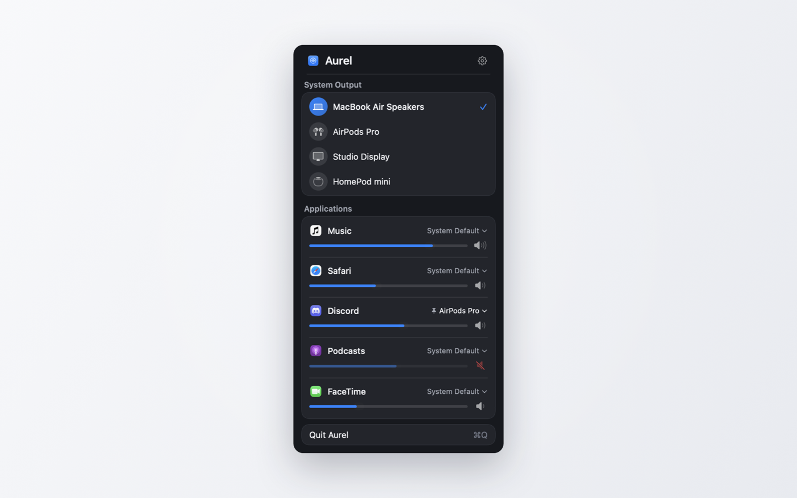

A native mixer for your Mac
Every app, its own volume.
Music up, notifications down, the call exactly where you want it — all from a quiet panel in your menu bar.
Free and open source · macOS 15.4 or later · Apple Silicon

Simple, on purpose.
Everything you need to balance your Mac's sound, and nothing you don't.
A volume for every app
Turn one app down and keep the rest exactly as they are. Levels are remembered.
Mute in one click
Silence a single app without touching your music or your call.
Pick where it plays
Switch the system output, or keep one app on your headphones while the rest follows along.
Pin or hide apps
Keep favourite apps in the list when they're quiet, and hide the ones you never adjust.
Keyboard friendly
Move with the arrow keys, press M to mute, or just type a number to set a level.
Feels built in
Native controls, Liquid Glass on macOS 26, and full light and dark appearance.
Your audio stays on your Mac.
Aurel processes sound locally using the macOS audio capture APIs. It never records, saves or uploads anything, needs no account, and installs no audio drivers.
Install in a minute.
This early version isn't notarized by Apple yet, so macOS asks you to confirm it once.
- Download Aurel.dmg, open it and drag Aurel to Applications.
- Open Aurel. When macOS says it can't verify the app, go to System Settings › Privacy & Security and click Open Anyway. Prefer Terminal?
xattr -dr com.apple.quarantine /Applications/Aurel.app - Allow System Audio Recording when asked. That's it — Aurel is in your menu bar.